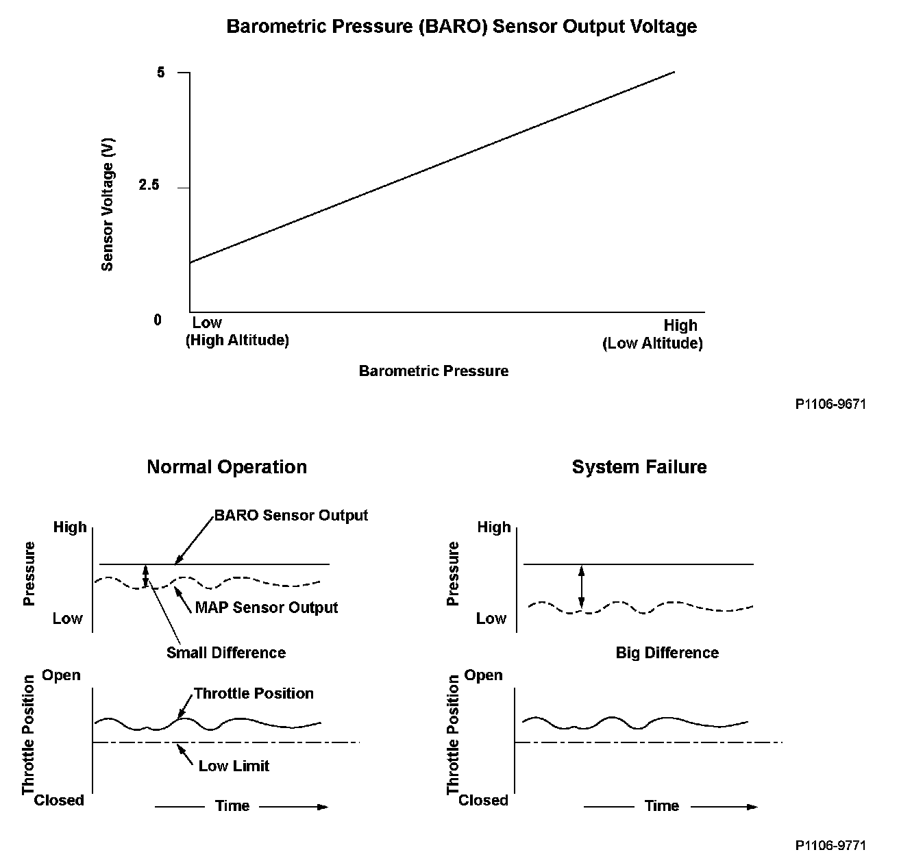
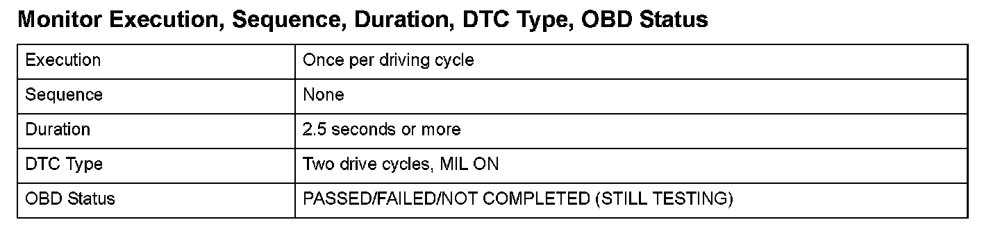
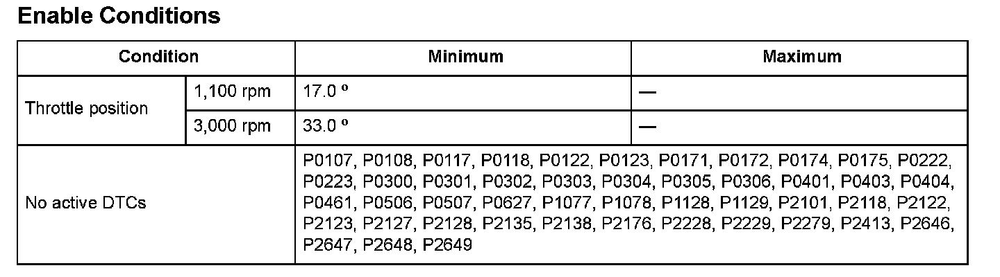

Advanced Diagnostics
DTC P2227: Barometric Pressure (BARO) Sensor Circuit Range/Performance Problem
General Description
The barometric pressure (BARO) sensor is built into the powertrain control module (PCM) and monitors atmospheric pressure. When the throttle valve is wide open, the manifold absolute pressure (MAP) sensor output is nearly equal to the BARO sensor output. Making use of this characteristic, a malfunction can be detected in the BARO sensor output.
If the throttle position is beyond a value stored in the PCM that is used to detect "wide-open throttle," and if the difference between the MAP sensor output and the BARO sensor output is equal to or greater than a set value, a malfunction in the BARO sensor output is detected and a DTC is stored.

Monitor Execution, Sequence, Duration, DTC Type, OBD Status

Enable Conditions
Malfunction Threshold
The difference between the BARO sensor output and the MAP sensor output is 26 kPa (7.5 in.Hg, 190 mmHg) or more for at least 2.5 seconds.
Driving Pattern
1. Start the engine. Hold the engine speed at 3,000 rpm without load (in Park or neutral) until the radiator fan comes on.
2. Drive the vehicle with the throttle position as specified under Enable Conditions for at least 2.5 seconds.
- Drive the vehicle in this manner only if the traffic regulations and ambient conditions allow.
Diagnosis Details
Conditions for illuminating the MIL
When a malfunction is detected during the first drive cycle, a Temporary DTC is stored in the PCM memory. If the malfunction recurs during the next (second) drive cycle, the MIL comes on and the DTC and the freeze frame data are stored.
Conditions for clearing the MIL
The MIL will be cleared if the malfunction does not recur during three consecutive trips in which the diagnostic runs.
The MIL, the DTC, the Temporary DTC, and the freeze frame data can be cleared by using the scan tool Clear command or by disconnecting the battery.